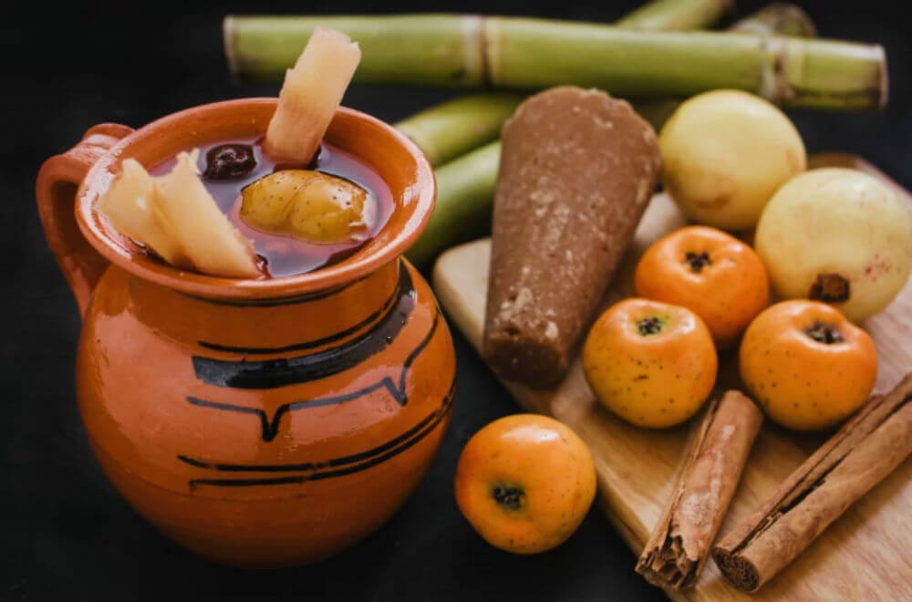
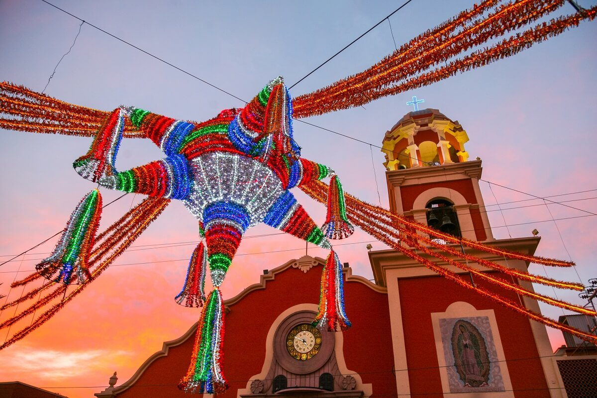
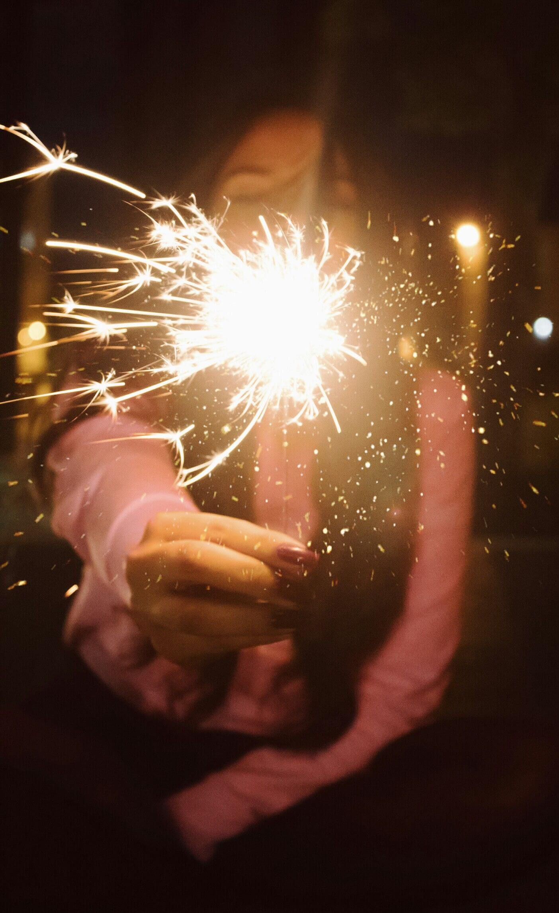
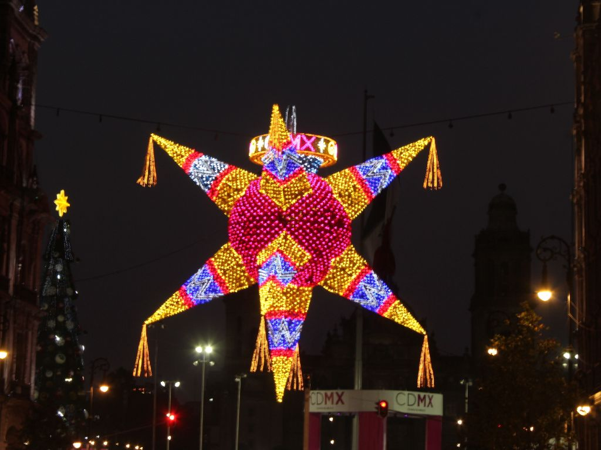

Posadas




Las posadas son fiestas populares que se celebran en México, Honduras, Guatemala, El Salvador, Costa Rica y Panamá durante los nueve días antes de la Nochebuena. Según los relatos tradicionales, José, acompañado de su esposa María, caminaron desde Nazaret a Belem hasta arribar a su destino. Al llegar, la Virgen estaba a punto de dar a luz a su hijo Jesús, y al buscar alojamiento fueron rechazados en no pocos hogares, entonces terminaron refugiándose en un establo. Este pasaje es conocido ahora como Las Posadas.
En la actualidad las posadas en los hogares mexicanos inicia cuando los anfitriones representan a los hosteleros y los invitados a los peregrinos, quienes piden alojo al entonar la letanía para pedir posada, que concluye con el famoso estribillo: “Entren santos peregrinos, peregrinos, reciban este rincón. Y aunque es pobre la morada, la morada, os la doy de corazón”.
Finalmente se ofrece a todos los invitados una pequeña cena y se rompen piñatas, además no pueden faltar los aguinaldos, los buñuelos, las luces de bengala y por supuesto el delicioso ponche.
Esta tradicional bebida, se elabora principalmente con frutas propias de esta temporada, tejocotes, guayaba, ciruelas pasas, manzanas amarillas, cañas de azúcar, tamarindo pelado, jamaica, piloncillo y azúcar, que hervido todo nos permite disfrutar del más clásico sabor de la Navidad.
Estas fiestas inundan los hogares con dulces aromas y sabores del campo mexicano, que están presentes en todos y cada uno de los alimentos que distinguen esta bella temporada.